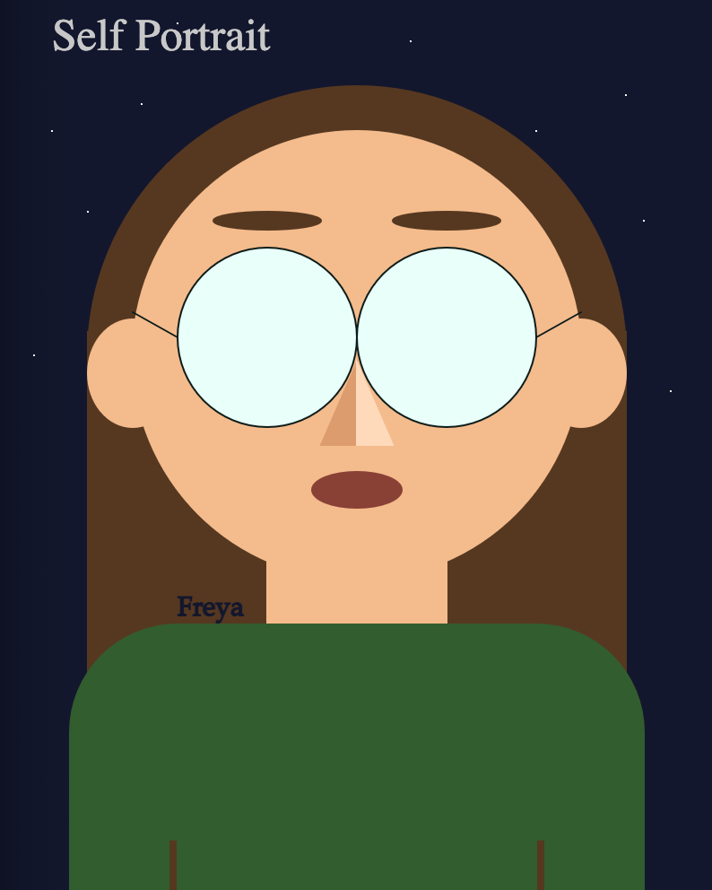

We then moved onto using Java Script, specifically the library, p5.js. This project was to create a self portrait using p5.js, and then add moving elements to it. To see the moving image, go to my GitHub and download the HTML file and two .js files, then open the index in your browser.